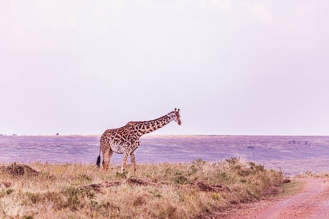

-

Domestic
Cow
Cows are domesticated herbivores and one of the most widespread and economically significant livestock species globally. They provide various products, including milk, meat, and leather, making them integral to agriculture and food systems. Cows are social animals, forming close bonds within herds and displaying complex communication through vocalizations and body language. Selective breeding has led to diverse breeds with different characteristics suited for various purposes, from dairy production to draught work. Sustainable farming practices aim to balance the needs of cattle with environmental conservation and reducing ecological impacts.
-
Wild
Deer
Deer are graceful herbivores found in various habitats worldwide, known for their antlers (in males) and their elusive behavior. They play essential roles in ecosystems as both prey and seed dispersers, contributing to biodiversity and forest regeneration. Deer exhibit seasonal behaviors, such as rutting during mating season and migration in search of food and shelter. Their keen senses, including acute hearing and a keen sense of smell, help detect predators and navigate their surroundings. Conservation efforts aim to manage deer populations sustainably while addressing conflicts with human activities, such as agriculture and urbanization.
-

Wild
Elephant
Elephants are the largest land animals on Earth, known for their intelligence, social complexity, and iconic tusks. They play critical roles in shaping their ecosystems, from seed dispersal to creating water sources through digging. Elephants exhibit strong familial bonds, with matriarchs leading herds and passing down knowledge to younger generations. Despite their formidable size, they are herbivores, consuming vast amounts of vegetation daily. Poaching for ivory and habitat loss threaten elephant populations, highlighting the urgent need for conservation measures.
-

Wild
Giraffe
Giraffes are the tallest mammals on Earth, recognized by their long necks, distinctive coat patterns, and ossicone-covered heads. They inhabit savannas and woodlands across sub-Saharan Africa, feeding on leaves from acacia and other trees. Giraffes have specialized cardiovascular systems to pump blood to their brains despite their height. Their unique browsing behavior contributes to shaping tree growth and maintaining biodiversity. Despite being iconic symbols of Africa, giraffe populations are declining due to habitat loss and illegal hunting.
-
Wild
Hippos
Hippos are semi-aquatic mammals found in sub-Saharan Africa, known for their massive size and barrel-shaped bodies. Despite their herbivorous diet, hippos are considered one of the most dangerous animals in Africa. They spend most of their day submerged in water to stay cool and protect their sensitive skin from the sun. Hippos communicate through vocalizations and body language, often displaying dominance or aggression. Conservation efforts focus on preserving their habitats and mitigating human-wildlife conflicts.
-

Domestic
Horse
Horses have been domesticated for thousands of years and play vital roles in human history, from transportation to agriculture. They come in various breeds, each with distinct characteristics and abilities, ranging from racing to heavy draft work. Equines are social animals, forming strong bonds within their herds and establishing hierarchies. With proper care and training, horses exhibit remarkable intelligence and adaptability. Today, they are valued companions, athletes, and partners in various equestrian disciplines worldwide.
-
Wild
Kangaroo
Kangaroos are marsupials native to Australia, known for their powerful hind legs and distinctive method of locomotion, hopping. They are herbivores, feeding mainly on grasses and forbs, with specialized digestive systems to extract nutrients efficiently. Kangaroos live in social groups called mobs, led by dominant males known as boomers. Their tails provide balance while hopping and can be used as a powerful weapon in defense. Despite being iconic symbols of Australia, kangaroos face threats such as habitat loss and vehicle collisions.
-
Wild
Koala
Koalas are marsupials native to Australia, renowned for their cuddly appearance and docile nature. They primarily feed on eucalyptus leaves, which provide both nourishment and hydration. These arboreal creatures spend most of their time in trees, with a specialized digestive system adapted to their leafy diet. Koalas have unique vocalizations and communicate through low-frequency sounds and bellows. Threats such as habitat destruction and diseases like chlamydia pose significant challenges to koala populations.
-

Wild
Panda
Pandas are iconic symbols of conservation efforts, known for their distinct black-and-white fur. They primarily feed on bamboo, consuming up to 12 hours a day to meet their dietary needs. Found in China, these solitary creatures are excellent climbers and proficient swimmers. Despite their adorable appearance, pandas possess strong jaws and can deliver powerful bites if threatened. Conservation measures have helped increase panda populations, but they remain vulnerable due to habitat loss.
-
Playful Kangaroos
-
Majestic Horses
-
Graceful Deer